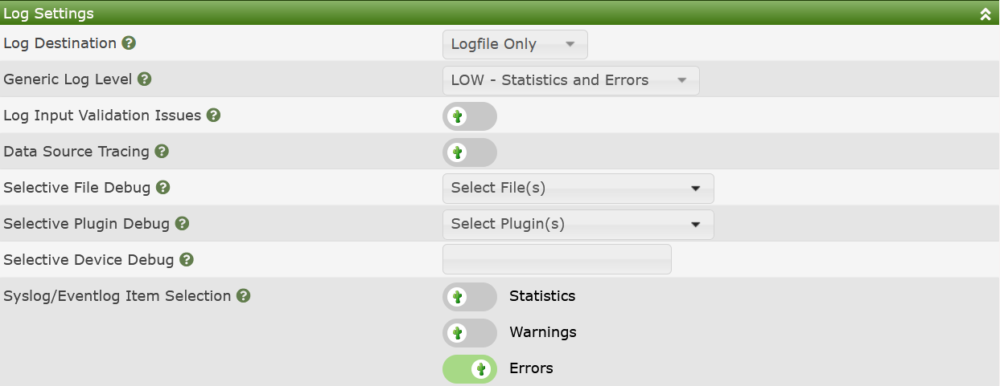
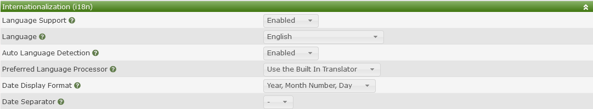
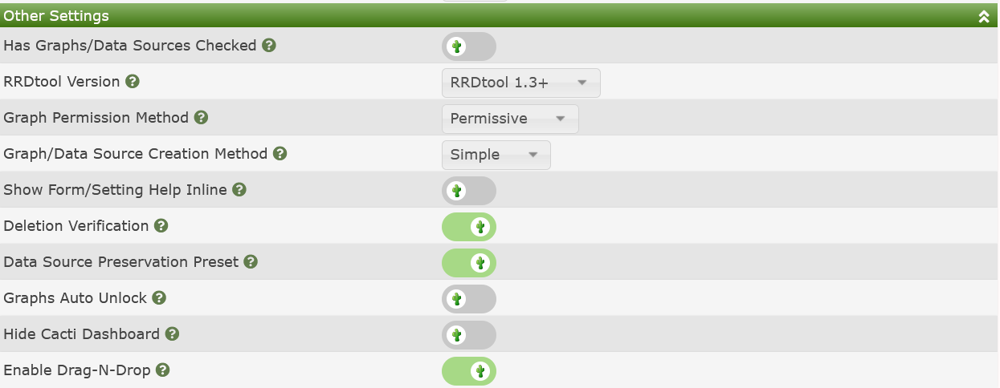
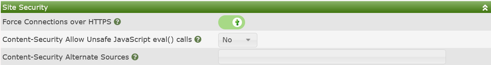
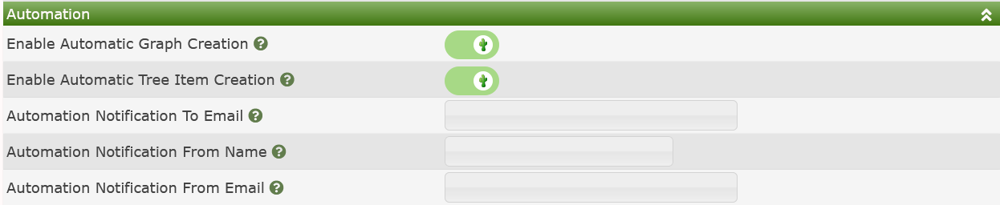
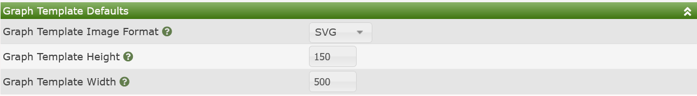

General Settings in Cacti consist of the following categories:
Content-Security-Policy, use of external JavaScript API's for plugins like Google Maps, forcing https, etc.Each of these settings will be documented below.
Cacti has the ability to log at various levels for various files. It has the ability to log to both the standard cacti.log file, as well as sending some notifications to Syslog for forwarding to centralized logging servers. The image below show what this settings sub-tab section looks like:

Those settings include:
Log Destination - Where to place Cacti log output. Options include:
This setting is quite self explanatory, when it comes to what type of messages are sent to the System log facility, see the Syslog/Eventlog Item Selection section below.
General Log Level - This is the level of logging that Cacti will use. Options include:
Select the log level that works best for your logging needs. Be advised that DEBUG generates a large amount of log data. DEVEL should only log SQL Queries.
Log Input Validation Issues - This is a Developer option to log the use of request variables that have not been validated through Cacti's validation functions.
Data Source Tracing - This is a debug options for logging of program flow around the creation of Data Sources.
Selective File Debug - A Multi-select setting that allows you to place any Cacti file to be placed into debug mode. This prevents the cacti.log file from being flooded with messages as is common in a general debug context.
Selective Plugin Debug - For Plugins, the same level of debug that is available for core Cacti files are available for Plugin files as well.
Device Debug - This is a comma delimited list of Cacti device_id that debugging of Data Collection services will be enabled for.
Syslog/Eventlog Item Selection - In order to not saturate the System logging facility, Cacti will only forward some events as defined by the various check-boxes.
The image below shows system level Internationalization settings for Cacti, commonly referred to as i18n.

Those settings include:
Language Support - Whether or not to allow selecting other languages for Cacti
Language - The default language to use at login time, or by default when the user has not specified a language.
Auto Language Detection - Whether or not Cacti should read the language from the browser and use that language by default.
Preferred Language Processor - Some PHP distributions doe not come with the php-gettext module. In those cases, the various Linux distributions come with alternate GetText processors. You can select the one that works best for your environment here.
Date Display Format - The default Date/Time display format.
Date Separator - The default Data/Time separator character.
These are additional settings for Cacti that fall into various categories, but that done have enough entries to justify a separate section. The image below shows that sub-section.

Those settings include:
Has Graphs/Data Sources Checked - If from the Console, you enter a pages that has the various Has options, if checked here, the default will be to check that setting.
RRDtool Version - Selecting the correct RRDtool Version will unlock features expected in modern graphing frameworks that leverage SVG (Canvas) rendering.
Graph Permission Method - This defined if a user needs to have access to both a Device and Graph Template to view a Devices Graphs, otherwise known as Restrictive or that to view a Devices Graphs the user only needs either the Device or Graph Template permission.
Graph/Data Source Creation Method - If you wish to only create Graphs from Graph Templates choose the Simple method. The Advanced method should only be used by people who wish to define individual Graphs with their own settings.
Show Form/Setting Help Inline - If this option is checked, you will be able to read all form/setting help inline. Otherwise, you will receive a pop-up to access form help.
Delete Verification - For simple object removal, things that can be removed by clicking and 'X' on the page, whether or not you wish to confirm those deletes.
Data Source Preservation Preset - Whether or not you wish to preserve Data Sources by default, or remove them when deleting Graphs. In all cases, Cacti will not allow the removal of a Data Source if there are Graphs using the Data Source. However, some Data Sources are managed externally to Cacti, and removing those Data Sources by default may not be desired.
Graph Auto Unlock - If when editing a Graph you wish to always unlock it by default, select this option. Not that this does have performance implications that may make the User Interface slower on vary large systems where devices have tens of thousands of Data Sources.
Hide Cacti Dashboard - This is an option used by some plugin developers who replace the default Cacti Console with their own contents, for example the Intropage plugin.
Enable Drag-N-Drop - Certain Cacti pages allow Drag-N-Drop. If you with to use it, check that option.
The image below shows Site Security settings for Cacti.

Those settings include:
Force Connections over HTTPS - Even if the web site allows http, redirect their browsers to HTTPS.
Content-Security Allow Unsafe JavaScript eval() calls - Allow plugins to use the JavaScript eval() function call, which is historically unsafe. However, some older plugins require it.
Content-Security Alternate Sources - If for some reason your Cacti site requires content from a CDN or a third party site, you can include a space delimited list of URLs that will be able to be traversed for Cacti content.
The image below shows general Automation Settings for Cacti.

Those settings include:
Enable Automatic Graph Creation - If a Cacti Device has Non Data Query Graph Templates associated with it, create those Graphs automatically when adding a new Device. Additionally, if you have Graph Rules apply those at Device creation time and save time.
Enable Automatic Tree Item Creation - If you have Cacti Tree Rules apply then at Device creation and save time.
Automation Notification To Email - When Network Automation finishes, send a notification to this Email address.
Automation Notification From Name - The From Name on the Automation Email.
Automation From Email - The From Email such as noreply@cacti.net that will be used for Automation notifications.
This is where Cacti obtains defaults for Graph Templates.

Graph Template Image Format - When creating a new Graph Template what Image Format should be used. There is either:
SVG - Scalable Vector Graphs (preferred, though larger size) PNG - Petri Net Graphs (backup, smaller but loose resolution when scaled)
Graph Template Height - The height in pixels of the Graph Canvas for new Graph Templates
Graph Template Width - The width in pixels of the Graph Canvas for new Graph Templates
Copyright (c) 2004-2024 The Cacti Group